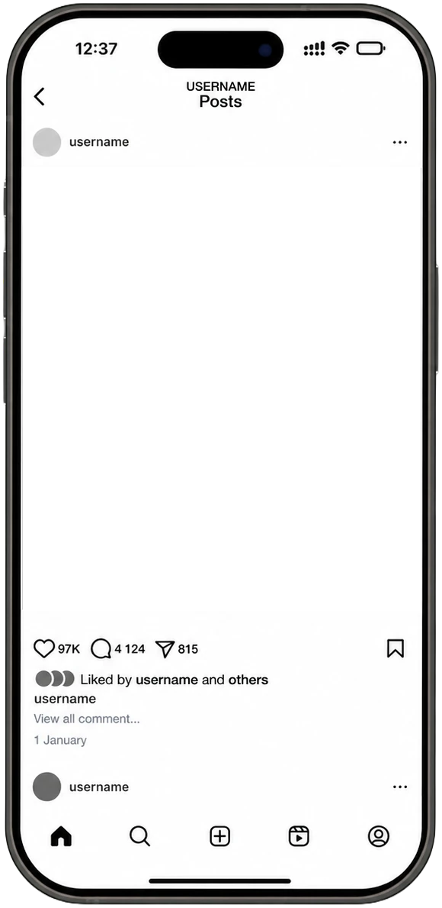

1/9
마우스 스크롤 시 다음 캐러셀로 이동

인스타그램 캐러셀 콘텐츠 · 시즌 컨셉 기획
수직으로 달려볼까
프랑스 프리미엄 러닝 브랜드 Satisfy의 브랜딩을 분석하고, 러닝의 속도와 태도를 벽 위로 옮긴 가상의
시즌 컨셉을 직접 기획 및 콘텐츠화한 프로젝트입니다.
프로젝트 개요
"멋있게 달리고 싶다"는 욕망에서 시작된 Satisfy. 그 욕망을 나만의 속도와 태도로 움직이고 싶은 마음으로 정의하고, 길이 아닌 벽 — 새로운 지형 위에 올려보는 실험 콘텐츠입니다. 시그니처 펀칭 디테일 위에 클라이밍에서 온 선명한 컬러 포인트를 더해, 도시의 벽을 새로운 트레일로 확장했습니다.
컨셉
벽을 한계가 아닌 새로운 루트로
러닝이 수평의 길을 따라 자신을 밀어내는 움직임이라면, 클라이밍은 수직의 벽을 따라 한계를 끌어올리는 움직임이라 접근했습니다. 방향은 다르지만, 공유하는 감각은 같다고 생각했습니다. 이 감각을 표지부터 제품, 캠페인 이미지까지
9장의 캐러셀로 풀어냈습니다.
프로젝트 정보
인원2인
기여도기획 · 콘텐츠 디자인 · AI 이미지 생성 (50%)
형식인스타그램 캐러셀 · 9장
제작 기간1주
도구Figma · FigJam · GPT-5.5 · Higgsfield